<nav class="navbar" role="navigation" aria-label="main navigation">
    <div class="navbar-brand">
      <a class="navbar-item" href="https://anujagrawal.netlify.app">
       &nbsp; TaskManager By Anuj Agrawal
      </a>
    </div>
  
    <div id="navbarBasicExample" class="navbar-menu">
      <div class="navbar-start">
        <a class="navbar-item" href="https://github.com/anuja0656/Task_Manager_MEAN_Project">
             &nbsp; Git Repo
            </a>
  
        <a href="https://github.com/anuja0656/Task_Manager_MEAN_Project/blob/main/README.md" class="navbar-item">
          Documentation
        </a>
  
        <div class="navbar-item has-dropdown is-hoverable">
          <a class="navbar-link">
            Test Users
          </a>
  
          <div class="navbar-dropdown">
            <a class="navbar-item">
             abcd@mogiio.com | anuj0656
            </a>
            <a class="navbar-item">
              hey@email.com | helloman
            </a>
            <a class="navbar-item">
              hola@email.com | helloman
            </a>
            <hr class="navbar-divider">
            <a href="https://github.com/Shefuchow/taskmanager/issues/new" class="navbar-item">
              Report an issue
            </a>
          </div>
        </div>
      </div>
  
      <div class="navbar-end">
        <div class="navbar-item">
          <div class="buttons">
            <a routerLink="/signup" class="button is-primary has-text-white">
              <strong>Sign up</strong>
            </a>
            <a routerLink="/login" class="button is-light">
              Log in
            </a>
          </div>
        </div>
      </div>
    </div>
  </nav>

<div class="centered-content">
    
</div>

